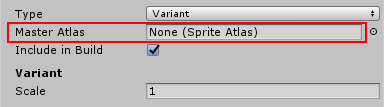
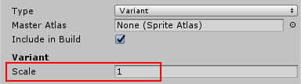

Sprite Atlas is an asset
Sprite Atlas is created via the menu option in the Editor and will stay as an assetAny media or data that can be used in your game or project. An asset may come from a file created outside of Unity, such as a 3D model, an audio file or an image. You can also create some asset types in Unity, such as an Animator Controller, an Audio Mixer or a Render Texture. More info
See in Glossary in the project’s folder (*.spriteatlas).
Sprite Atlas asset provides a set of texture settings for the packed texture. Regardless what was the texture settings of the spriteA 2D graphic objects. If you are used to working in 3D, Sprites are essentially just standard textures but there are special techniques for combining and managing sprite textures for efficiency and convenience during development. More info
See in Glossary being pack in an atlas, the result atlas texture will only respect the settings in the atlas asset.
Sprite Atlas asset has a runtime representation which can be accessed during Runtime.
User will be able to create another Sprite Atlas asset and declared it is a variant of one existing Sprite Atlas in the project. It then will duplicate the master’s atlas texture and resize it according to a multiplier.
The Sprite Packer is disabled by default but you can configure it from the Editor settings (go to Edit > Project SettingsA broad collection of settings which allow you to configure how Physics, Audio, Networking, Graphics, Input and many other areas of your project behave. More info
See in Glossary > Editor). You can change the sprite packing mode from Disabled to either:
Use Always Enabled when testing packed Sprites loaded from an Asset Bundle during Play mode.
The Sprite Atlas is a type of Asset in Unity projects. You can create them, and they are ready to use, via the Project View. To create a Sprite Atlas select Asset -> Create -> Sprite Atlas from the main menu.
| Property | Function |
|---|---|
| Type | Sets the type of atlas to be either a Master or Variant Atlas. |
| Include in build | Always includes the Atlas Asset in the build. |
| Allow Rotation | Allows sprites to be rotated for packing |
| Tight Packing | Non-rectangle packing |
| Read/Write Enabled | Set this to true if you want texture data to be readable from scriptsA piece of code that allows you to create your own Components, trigger game events, modify Component properties over time and respond to user input in any way you like. More info See in Glossary. Set it to false to prevent scripts from reading texture data. |
| Generate Mip Maps | Select this to enable mip-map generation. Mip maps are smaller versions of the Texture that get used when the Texture is very small on screen. |
| Filter Mode | Select how the Texture is filtered |
| Platform-specific overrides panel | Use the Platform-specific overrides panel to set default options (using Default), and then override them for a specific platform using the buttons along the top of the panel. https://docs.unity3d.com/Manual/class-TextureImporterOverride.html |
| Objects For Packing | The objects to be included in the packed Atlas. Folders, Textures or individual sprites can be added to the list. |
Folders, Textures or Sprites can be assigned to the Sprite Atlas. Entire folders can be assigned to the Sprite Atlas asset, all Textures within that folder including subfolders will be packed. When assigning an individual Texture, all defined sprites will be included. Single sprites can also be assigned to the atlas and other sprites within the same Texture will not be considered.
To include assets to be atlased, select the Atlas asset and add them by either adding new entry to the list or dragging and dropping them from the Project onto the list area in the inspectorA Unity window that displays information about the currently selected GameObject, Asset or Project Settings, alowing you to inspect and edit the values. More info
See in Glossary. You can add the folders, textures, sprites to the atlas.
Set the desired settings for the generated atlas. Changes to the setting will always mark this atlas as modified and will be packed again during the packing phase.
The packed atlas can be previewed by pressing the “Pack Preview” button in the inspector. This will trigger a packing for this atlas. Once the packing is done, the texture will appear in the preview section.
All atlases with modified settings will be packed before entering Play Mode (if Always Enabled is selected).
User will be able to create another Sprite Atlas asset and declare it is a variant of an existing Sprite Atlas in the project. It will then duplicate the Master’s atlas texture and resize it according to a multiplier.
Set the Type for the Sprite Atlas to Variant. 
Assign an atlas to the Master Atlas slot. 
Set the scaling factor for the variant. Value can be from 0.1 to 1.
To bind the variant atlas as default instead of the master, just check the “Include in build” option in the variant and uncheck the option in master.
Checking both will randomly include one of the atlas (master/variant). You might want to uncheck both to have late binding, mentioned below.
Create a custom componentA functional part of a GameObject. A GameObject can contain any number of components. Unity has many built-in components, and you can create your own by writing scripts that inherit from MonoBehaviour. More info
See in Glossary that takes a “SpriteAtlas” as a variable.
Assign any of your existing Sprite Atlas to the field.
Enter play mode or run the player.
Access the variable and notice you can now call the property “.GetSprites” to get the array of Sprites packed in this atlas.
A Sprite can be started in runtime as “packed but not referencing any atlas” and will appear blank until an atlas is bound to it. The benefit of this behaviour is to allow user to have chance to do late binding if the source of the atlas is not available during startup e.g. asset bundles downloaded from the web.
As long as the Sprite is packed into any Sprite Atlas but the sprite atlas is not bound as default (e.g. unchecked “Include in build” option) the Sprite will be invisible in the sceneA Scene contains the environments and menus of your game. Think of each unique Scene file as a unique level. In each Scene, you place your environments, obstacles, and decorations, essentially designing and building your game in pieces. More info
See in Glossary.
User can listen to callback SpriteAtlas.atlasRequested.
This delegate method will provide a tag of atlas which suppose to bind and a System.Action which takes in a SpriteAtlas asset. User is expected to load the asset by any mean (script references, Resources.load, Asset bundle) and supply the asset to the System.Action.
2017–05–26 Page published with no editorial review
New in Unity 2017.1 NewIn20171
Did you find this page useful? Please give it a rating: